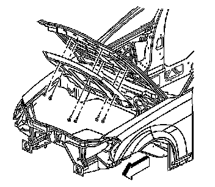
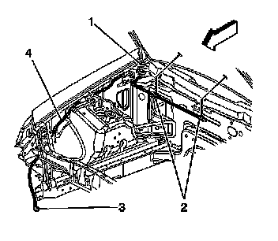
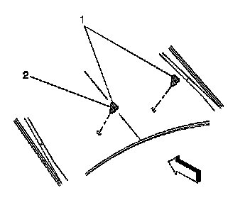

Windshield Washer Nozzle Replacement (Domestic)
Windshield Washer Nozzle Replacement (Domestic)
Removal Procedure
1. Open the hood.

2. Remove the hood insulator. Refer to Hood Insulator Replacement (Service and Repair) .

3. Disconnect the washer hose connections (2) from the washer nozzles.

4. Remove the washer nozzles from the hood by pushing the tension clips (2) in towards the windshield.
5. Push the washer nozzle (1), outward toward the windshield.
6. Remove the inoperative washer nozzle (2) from the hood.
Installation Procedure
1. Install the washer nozzle (1) to the hood by indexing the tension clips (2) on the nozzle to the opening in the hood.
2. Push downward in order to secure the washer nozzle tension clips (2) to the hood.
3. Connect the washer hose connections (2) to the washer nozzles.
4. Install the hood insulator. Refer to Hood Insulator Replacement (Service and Repair) .
5. Close the hood.